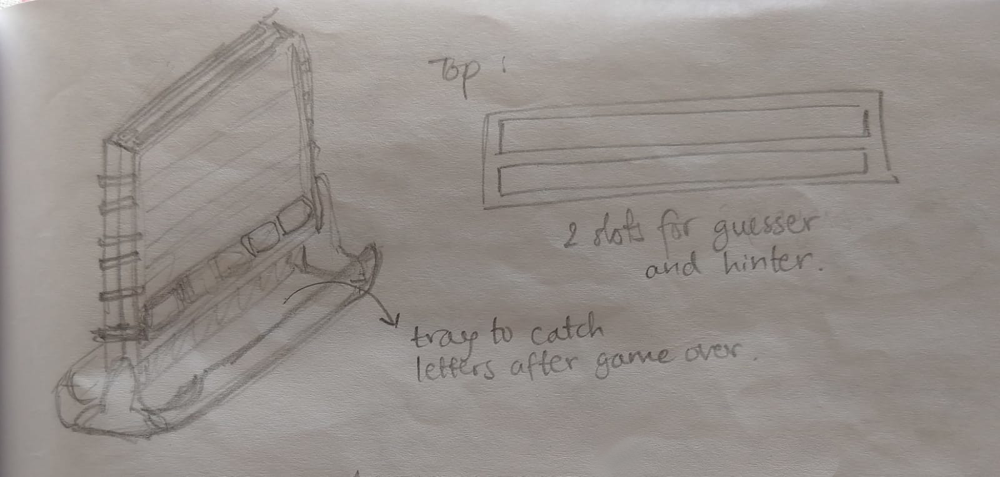
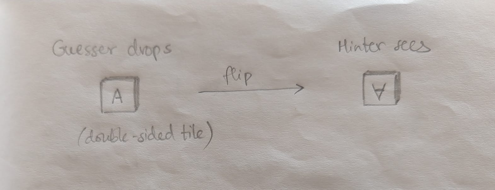
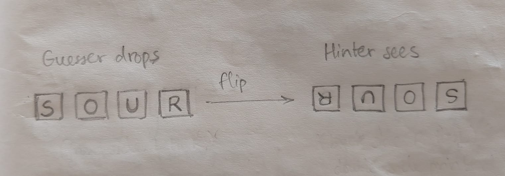
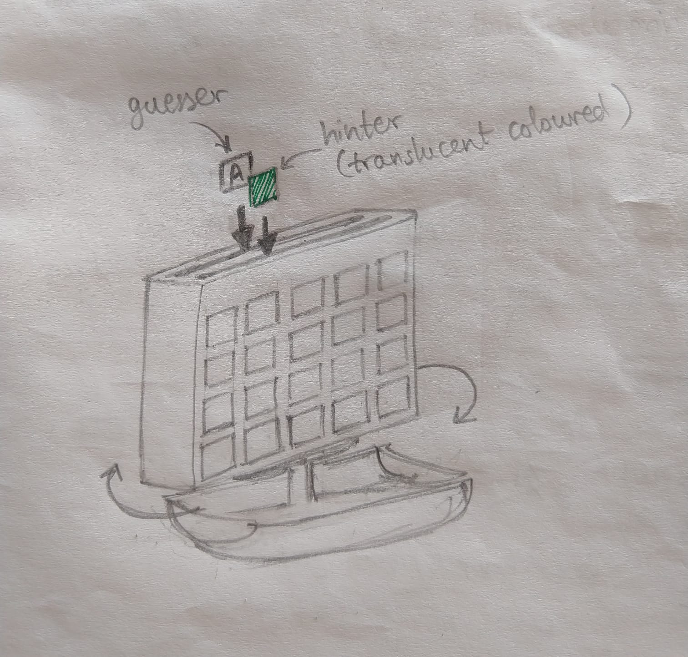
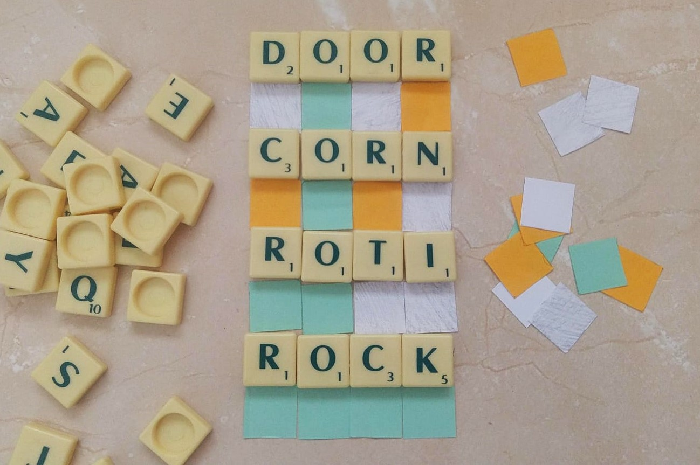

This is a behind-the-scenes account of a project that is a work in progress.
I volunteer three hours a week teaching English to underpriviledged high-school girls at a shelter home in Pune, India. Even as high-school students, they struggle with spelling and my main task is to make them confident in their ability to learn.
I was suprised to hear them mention Josh Wardle's 'Wordle' when discussing video games. As an avid Wordler myself, I immediately thought how much it could help with learning to spell. The shelter does not allow use of personal devices, so I decided to come up with a board game version of Wordle to use in class.
From the Wikipedia page -
Wordle is a web-based word game created and developed by Welsh software engineer Josh Wardle. Players have six attempts to guess a five-letter word, with feedback given for each guess in the form of colored tiles indicating when letters match or occupy the correct position.
The grid format of Wordle reminded me of another board game I enjoyed as a child - 'Connect-4'.
I thought of using a frame like Connect-4 with two parallel slots instead of one - one for the guesser to insert letter tiles, and one for the hinter to insert coloured hint tiles.

Two things about the web-based Wordle stand out - the flip animation for hints and colour-coding of tiles. Incorporating these, one guessing round could go as follows -
There are a few immediately apparent problems with this design.
1. On flipping a row 180 degrees, the letters will end up upside-down for the hinter.

2. A word entered left to right by the guesser will read right to left for the hinter.

3. The face-to-face arrangement of this gameplay could restrict participation to only two active players. In class, I am often interacting with four or five girls sitting in a circle. With only two getting a chance to play at a time, the others will likely get distracted.
I decided that the vertical flip is a cosmetic requirement that I should let go of. Instead of the two-player frame, I could have the frame rotate about a central vertical axis.

This will afford a multiplayer pass-around gameplay suitable for my classes, where we could go around the circle taking turns to guess and hint. It will also maintain reading direction and keep letters right side up.
This project is a work in progress in its early stages, and will take time to prototype and test after a design is ready. Meanwhile, we play a simplified version in class.
We play with Scrabble tiles laid flat on the ground. The guesser picks out tiles to spell a word and the hinter lays coloured paper squares below the tiles as hints.

Playing this game has helped the girls get a feel for 'rules' of English spelling. I have observed one girl include a 'K' in her guess after she receives a hint that the word has a 'C'. 'A' and 'E' are popular guesses, followed by letters in the girls' own names. I plan to lead the next game with a lesson on vowels and consonants.
We mostly play with three- and four-letter words for now, and throw in a five-letter word as an occassional challenge. I don't restrict intermediate guesses to valid English words, but I award extra points. The girls love to challenge the validity of guesses, so I taught them to use a dictionary to give their own verdict. If a word seems too difficult to guess, the girls supplement the hints by acting out the meaning of the word, like the familiar game of 'Dumb Charades'. I have also observed that the girls like to form teams and compete when we play. I am taking these observations into account while working on the Wordle board game.